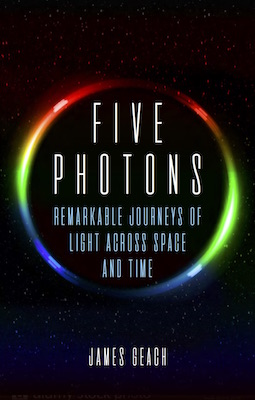
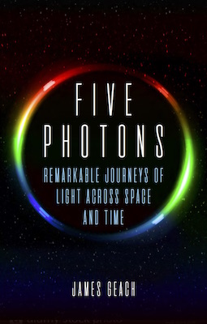
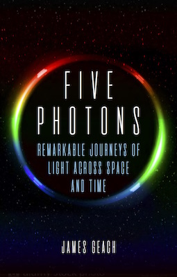

I am a Royal Society University Research Fellow and Reader in Astrophysics based in the Centre for Astrophysics Research (CAR) at the University of Hertfordshire. I did my Ph.D. at Durham University under the expert tutelage of Ian Smail. After graduating, I was a post-doc at Durham and Banting Fellow at McGill University before coming to CAR in 2013.
My research focuses on the evolution of galaxies, with a special emphasis on obscured activity, the role of environment, and the properties and evolution of cold gas in and around galaxies. For a complete record of my research, you can find an up-to-date listing of publications and pre-prints at the NASA Astrophysics Data System.
Some of my research in the press:
Galactic blow out
Lyman Alpha Blobs: Galaxies Coming of Age in Cosmic Blobs
Herschel Sees Intergalactic Bridge Aglow With Stars
Galaxy Goes Green in Burning Stellar Fuel
Astronomers Map Dark Matter Throughout the Entire Universe
I like trying to break down complex
ideas into simple language, and communicate the cutting edge of
astronomical research, in a way that anyone can understand. I have
written two popular science books, both published by Reaktion Books:

I have written feature articles for Scientific American and Sky & Telescope. I regularly contribute to The Conversation and also write the occasional piece on Medium.